Hello World - I’m Natascha!
Since I was a small child I loved painting and math. Over the time this changed
into a fascination for the fast pacing technology which is drastically
changing our society — and art with it’s very reflective nature.
I have studied "Art and Multimedia", an interdisciplinary program on
media art and IT, afterwards I decided to take a deeper look into IT studies.
Since that time I worked in different fields where I have strengthened my
skills and expertise. I worked as a Video Editor, Graphic Designer with focus on UI, freelance Media-Artist and
Software Developer. Never being afraid to use different tools from different
domains and following unexpected ways to realize the best outcome for my projects, I always remained
curious to learn more.
Whenever possible I take time to travel. Whenever I travel I take my camera with me. It is the interaction with people from different cultures, and the understanding that we are all unique — but the same in our essence, that thrives my wish to explore further and to capture the never-ending beauty that surrounds us all (...and last but not least a tiny need for adventure once in a while;).
Skills
Quote
“Live as if you were to die tomorrow. Learn as if you were to live forever.”
 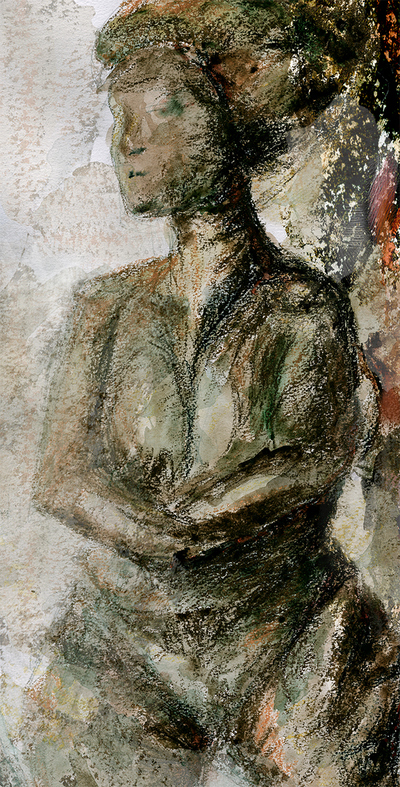
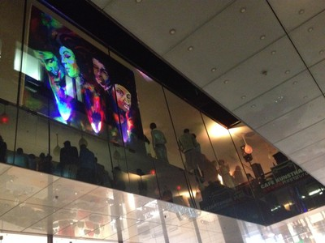
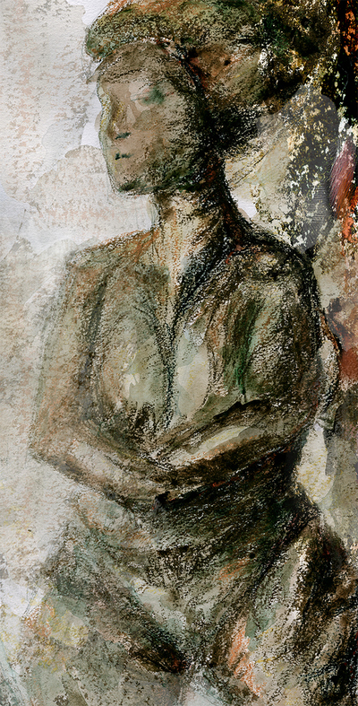
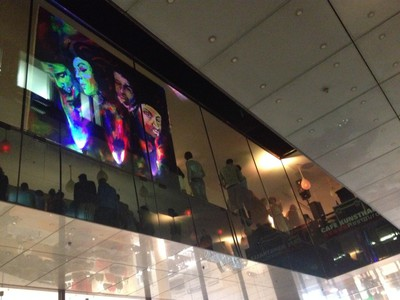


 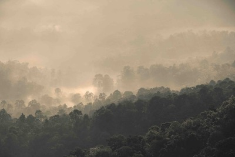
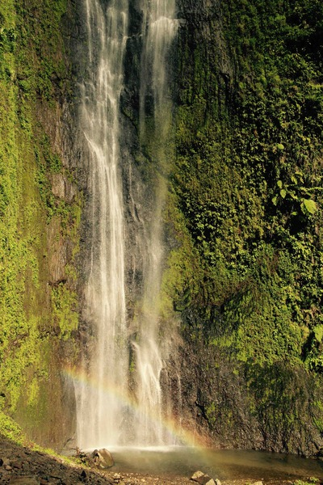
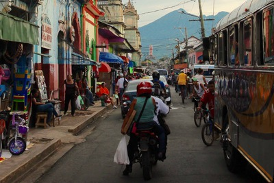
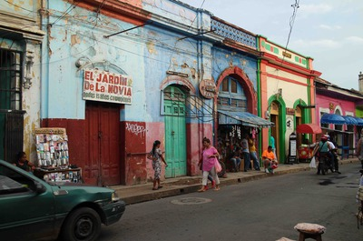
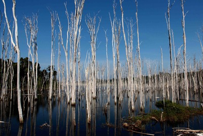
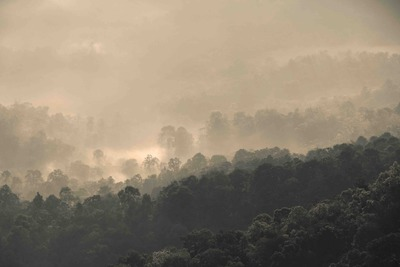
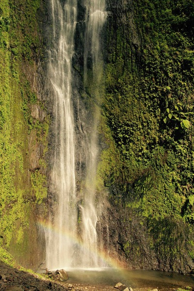
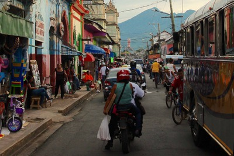
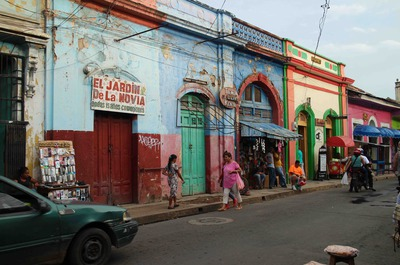
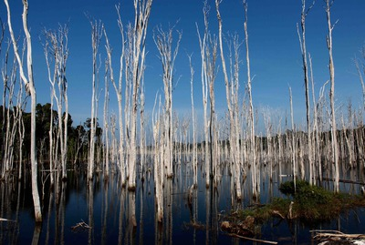